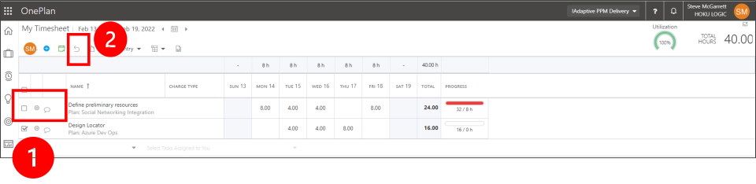
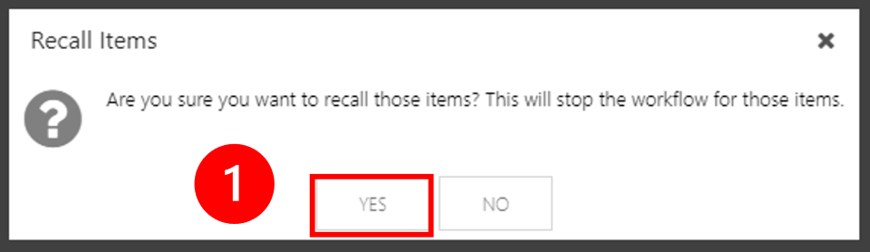

Timesheets
OnePlan timesheets let you track and submit time for all work you’re assigned to do as well as non-work like time off for vacation, holidays, or professional development training. By the end of this module, you will understand how to use OnePlan to track your time and submit a timesheet.
Learning Objectives
By the end of this module, you will know how to use OnePlan to:
Track (Enter) time
Submit a timesheet
Recall a submitted timesheet
Watch the Timesheets Video (5:50)
This video gives a step-by-step demonstration of how to use OnePlan Timesheets to enter and submit your progress across all of the tasks you're working on across all plans.
How will OnePlan Timesheets Help Me?
OnePlan timesheets organize all the work you need to do across all the plans you’re working on. Seeing everything in one place helps you prioritize your work and helps you plan your time. OnePlan timesheets also let you track the progress you’re making on your plan and task assignments as well as time off.
Use Timesheets
Using OnePlan Timesheets to track and submit your timesheet is a six-step process. Follow the steps below to track (enter) time and submit your timesheet.
Navigate to My Timesheet
To navigate to your timesheet, click on the Timesheets icon located in the navigation menu on the left side of the page.
You will begin in the "Time Entry" mode and is where you will track time on your work assignments.
Any items that are assigned to you and have dates overlapping the timesheet period dates will automatically be added to the timesheet.
Select / Change Timesheet Periods
When you first go to your timesheet, you will see the current timesheet period. If needed, you may navigate to another timesheet period. There are two (2) options to see other available timesheet periods.
Option 1 - Dropdown list
Click on the period dates to display a dropdown of all open/unlocked timesheets.
Option 2 - Period Navigation Icons
Use the period navigation icons to quickly move to:
the previous period.
the current/"today" period
the next period
Search For and Add Timesheet Items
Sometimes you may work on a task that isn’t already in your timesheet. When that happens, you can search for – and add –those tasks to your timesheet to track and submit your progress updates.
There are several ways you can add tasks to your timesheet. Review the options and steps below to search and add tasks to your timesheet.
Option 1 - Add Item Icon
Add Item. Click on the Add Item icon.
Add Tasks Window. The Add Tasks window displays all available plans.
Select Plan. Select a plan to display available tasks.
Select Task(s). Find and select the task or tasks you want to add to your timesheet.
Add Task(s). Click the Add Tasks button to add the selected task(s) to your timesheet.
Option 2 - Search for Task
Add Item. Click on the Add Item icon.
Add Tasks Window. The Add Tasks window displays.
Search for Plan. Type the plan name into the Find Plan field.
Select Task(s). Find and select the task or tasks you want to add to your timesheet.
Add Task(s). Click the Add Tasks button to add the selected task(s) to your timesheet.
Track (Enter) Time
Once the tasks are added to your timesheet, you can track (enter) your time.
Track. Enter time into the date cells.
When you click in a cell, the task information form opens on the right side and displays the following:
Plan
Task
Date
Hours (editable)
Notes (editable)
Charge Type. You may enter values for additional fields, such as Charge Type.
Note
Additional fields vary by organization and are setup by your administrator.
Submit Time
At the end of the timesheet period, after you have entered your hours, you will need to submit your time.
Select and Submit Timehseet
Select tasks. Check the box to select each timesheet item to submit.
Submit. Click the Submit icon.
Important
Once a timesheet item (row) is submitted, it is no longer editable. If you need to edit submitted time, then you will need to recall the item to edit and resubmit
Verify Approval Status
Updated Status Icon. When your timesheet approver has approved or rejected your timesheet, you will see the updated status icon. Click on the icon to find out the status of your timesheet approvals and if there are any approval/rejection notes.
Note
Your organization may set timesheets to be automatically approved.
Recall Submitted Time
If you need to update a timesheet entry after it has been submitted, you can recall the entry.
Select. Select the items to recall.
Recall. Click the Recall Icon. The Recall Items confirmation will open.
Click YES to recall the time entries to edit and resubmit.

Important
You cannot recall approved time. Once time entries are approved, they are locked.
Conclusion and Key Takeaways
The Timesheet course showed you how to use OnePlan timesheets to track and submit your time to communicate the progress you make on all your task assignments across all the work you’re assigned to do.